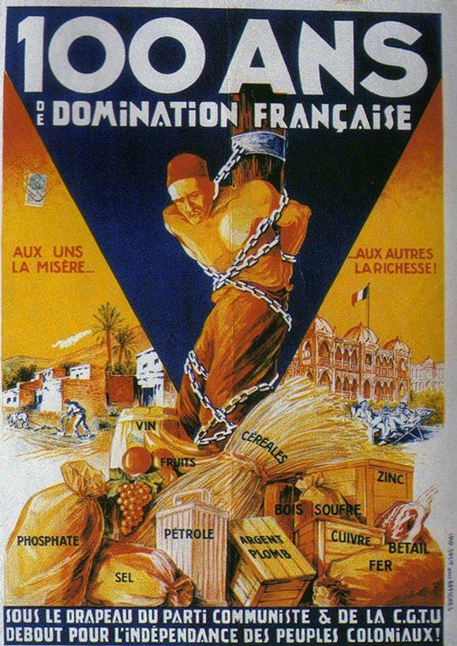

L’idée que se fait Angéla Merkel de l’identité nationale est plutôt lugubre et castratrice. Chaque Allemand âgé d’une trentaine d’année est prié de se souvenir des crimes de ses arrière-grands-parents, de ses grands-parents, il y a plus de 75 ans.
Depuis plus de trois générations, les gouvernements successifs de l’Allemagne s’ingénient à écraser de culpabilité les descendants des Allemands ayant connu la guerre. Qu'a dit Madame Merkel le 6 décembre : « Se souvenir des crimes, nommer leurs auteurs et rendre aux victimes un hommage digne, c'est une responsabilité qui ne cesse jamais. Ce n'est pas négociable. Et c'est inséparable de notre pays. Être conscient de cette responsabilité est une part de notre identité nationale ».
Pourquoi pas, diront ceux qui vécurent les crimes nazis ! On les comprend d'ailleurs ! Mais c’est tout de même moins évident pour ceux qui n’ont pas été concerné parce que bien trop jeunes !
Une juste information historique devrait se faire, sans pour autant que des jeunes Allemands se sentent coupables d’un crime commis par leurs ancêtres !
Les crimes nazis sont spécifiques, disent les autorités de tous bords et les responsables juifs partout dans le monde ! Certes, cette horreur est une infamie à marquer au fer rouge, mais sur quelle peau ? Celle des nazis décédés depuis, ou celle des gamins nés il y a 30, ou 20 ans, voire ceux nés aujourd’hui ? Silence assourdissant là-dessus !
C’est ce que vivent les allemands depuis plus de 75 ans à hauteur diront les mêmes, des massacres commis par les nazis, et du crime horrible de l’extermination industrielle de masse !
Nous vivons en France, la culpabilité permanente pour des actes commis il y a 400 ans par des marchands d’esclaves, des négriers ultra minoritaires !
Pour ceux qui sous Charles X, firent cesser les agressions des barbaresques d’Alger le long des côtes européennes en 1830.
Pour ceux sous les ordres des initiateurs radicaux-socialistes de la colonisation sous la IIIème république.
Pour ceux qui firent la conquête des territoires qui devinrent par la suite l’Algérie ! Qui soumirent le Maroc, la Tunisie, etc.
Notre histoire coloniale nous est renvoyée aujourd’hui, en pleine face, par des descendants vivant bien en France, et surtout nourris grassement sur cette culpabilité ! Ils ne disent mot sur les coûts, les avantages, et les déficits ! Rien sur les avancées de cette colonisation, sur l’éducation, les soins médicaux, sur les constructions de routes, les ports, les chemins de fer, les gares, etc. Pour eux, tout est négatif et les Français sont coupables à vie. Donc, nous connaissons ce qu’est la culpabilité permanente distillée dans les écoles gauchistes de la République, cette fabrique de crétins et d'incultes, et dans les médias !
Pour ma part, je ne me sens pas coupable de mes ancêtres qui étaient des paysans de la Sarthe et s’épuisaient dans les champs au temps de l’esclavage, de la colonisation, et de l’Algérie.
Mon grand-père était cheminot à Chartres. Il avait fait 14/18 et il avait donné pour la France. Sous l'occupation, il partait, à son jour de repos, avec son vélo faire des dizaines de kilomètres pour trouver des pommes de terre afin de nourrir sa nombreuse famille ! Rien d’exceptionnel, la vie de la plupart des Français de ces différentes époques !
De même, je considère que les Allemands d’aujourd’hui n’ont pas à se sentir coupable des horreurs commises par leurs ancêtres, nazis ou non ! Beaucoup en France, dans les familles de résistants de la dernière heure ou de la première, où chez les descendants de miliciens ou de collabos, n’ont pas à se sentir fiers ou coupables de ce qu’ont fait leurs grands-parents ! Il y a un moment, où la culpabilité par héritage, cela suffit ! Parce que certains de nos bienpensants d'aujourd'hui, feraient bien de se taire !
Nul n’est responsable des actes de parents ! Ou alors, il faudrait aussi se pencher sur les crimes des vainqueurs ! Sur la pratique de l’esclavage par les Africains eux-mêmes, sur les captifs esclaves destinés à la boucherie, comme relater par Clémenceau lors d’un de ses voyages ! Dire aussi que c’est la colonisation qui éradiqua l’esclavage et le cannibalisme ! Est-ce trop demandé ?
Il faudrait sans doute dire, les crimes commis par les communistes de Staline, les affamés d’Ukraine, les alliances avec le nazisme (Pacte Germano-Soviétique), l’occupation des pays de l’Est et les massacres qui allèrent avec ! Silence des communistes !
Il faudrait sans doute rappeler ou apprendre à certains, les ravages de la remigration des Sudètes ceux que l’on a considéré comme allemands, et qui étaient depuis plusieurs siècles, installés en Tchéquie, en Slovaquie, ou dans l’ex-Allemagne devenue polonaise.
Ce sont des milliers de morts, femmes, enfants, vieillards qui succombèrent dans l’indifférence des Anglais, des Américains, des Français et des Russes ! Sans compter le renvoi des soldats ukrainiens qui avaient fait la guerre contre Staline par les Anglais. Ils furent déportés dans les camps soviétiques !
Il faudrait rappeler les centaines de milliers de morts civils au Japon !
Il faudrait aussi rappeler les milliers de morts civils en Algérie, et particulièrement les familles de Harkis, mais aussi les pieds noirs, tous assassinés par les sbires du FLN, aidés en cela par les porteurs de valises communistes. Rappeler que les soldats conscrits et les Harkis, sont tous morts pour la France !
En termes de culpabilisation, l’histoire de notre continent est riche en moyen d’être coupable de tout et de rien !
Mais si on voulait être juste, et sans tomber dans l'idéologie, il faudrait parler des USA d’hier avec le massacre des Indiens, ses guerres d'invasions contre le Canada et le Mexique, et ceux d’aujourd’hui à commencer par le Vietnam en passant par l'Irak !
Il faudrait parler des crimes de l’islam commis depuis quatorze siècles, ainsi que les ravages de celui-ci sur le continent noir africain, et sur les Blancs du Caucase.
Que dire de la Chine, de son passé impérial, et des crimes de guerres de Mao Tsé Tung (20 millions de morts) !
Si j’étais Allemand, je cesserais d’être coupable ! Je protesterai contre cette Chancelière qui pratique la confusion, et veut faire porter aux Allemands un chapeau Hitlérien, alors que les coupables d’antisémitisme, sont ceux qu’elle a fait entrer par milliers dans son pays.
Ce n’est pas une pseudo jeunesse hitlérienne qui viole sur les places publiques, qui poignarde des innocents, et qui écrase avec des camions ou des voitures, des piétons en promenade… Qui hurle sa haine des juifs !
C’est Angéla Merkel qui est responsable des actes infâmes commis dans son pays ! C’est trop facile de jouer sur la culpabilisation, d’utiliser les autorités religieuses juives, de faire des déplacements à Auschwitz pour mieux faire avaler sa politique d’invasion migratoire aux Allemands ! Que des jeunes allemands se rebellent à travers l’Afd, et affirment que trop, c’est trop, ne peut-être qu’une juste réaction !
Que le devoir de mémoire soit préservé est une chose, que ce devoir soit utilisé à des fins politique en est une autre !
Si les juifs de France et d’Allemagne partent en Israël, ce n’est pas du fait de la montée du nazisme en France et Allemagne, mais bien parce que l’invasion migratoire d’origine islamique est patente, et qu’elle amène des haines et des rancunes millénaires, issu d’un livre dont le contenu fourmille d’appels aux meurtres des infidèles, et dégage un racisme de fait, et une misogynie bien réelle !
Angéla Merkel est responsable ainsi que tous ceux qui ont une vision comptable d'entreprise, des tableaux de bords de multinationales, des prévisions de retraites, et se moquent totalement des peuples, des cultures, des sentiments nationaux ! Les élites se sont découplés des peuples, et ils devront un jour ou l'autre, en payer le prix ! En Allemagne comme en France !


Partager cette page